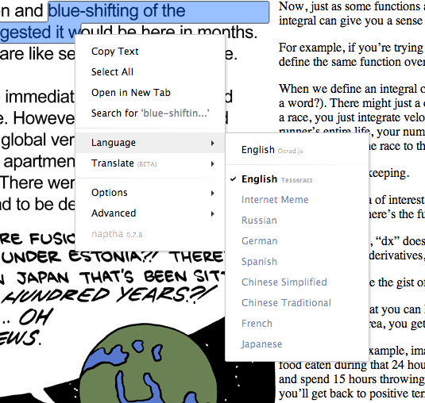

Project Naptha includes a built-in Optical Character Recognition (OCR) engine, a pure javascipt version of the open source Ocrad optical character recognition engine. Because it is relatively small and fast, it runs locally on your computer. Tesseract is a more advanced engine that runs as an online cloud service.
Using Tesseract for the first time often takes a few seconds to process, because it needs to queue the image for remote processing. However, the result is then cached, and subsequent views of the image will automatically load the high quality Tesseract version.
Before submitting an image to the server, you should be mindful of the fact that the OCR engine is intended for dealing with public images and the results of the transcriptions will be persisted indefinitely. While there are reasonable protections against the leakage of information, it is still a risk that you have to consider. When dealing with information on private networks, you should not attempt to use the Tesseract OCR engine.